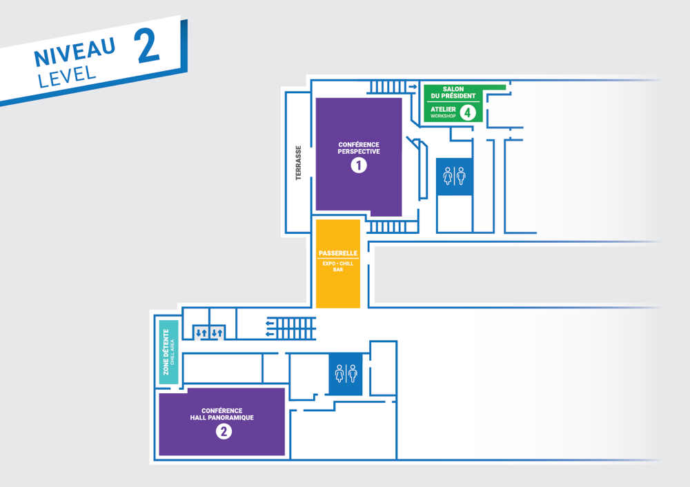
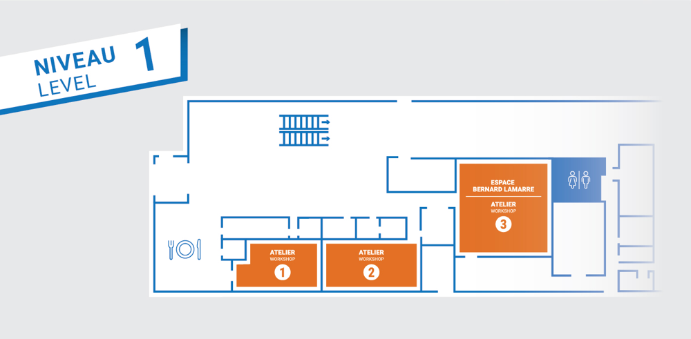

This is the moment to pickup your badge. Make sure you have your Eventbrite ticket printed or on your mobile phone.
Presented in Conference Room 1 and streamed into Conference Room 2.
Yashvier Kosaraju Twilio
Marc-andre Labonte Desjardins
Marc-Etienne M.Léveillé ESET
Jonathan Marcil Twitch
During this break you are free to explore the area and find something to eat.
Silvia Väli Clarified Security
Florian Magin ERNW Research GmbH
Alexander Druffel Fraunhofer-Institute
Olivier Bilodeau GoSecure
Screening of the film HAK MTL at the Montreal Science Centre IMAX Theatre, followed by a Q&A with Prof. Ian Goldberg, David Goulet, Gabriel Tremblay, and the filmmaker Alexandre Sheldon.
Seats are limited and assigned on a first-come, first-serve basis.
Synopsis: We are in 2019 and privacy no longer exists. In less than one generation, the internet has become a mass surveillance machine.Whatever hope is left will come from the hacker movement. After all, the internet is their playground. Hackers know better than anyone the real extent of surveillance. By giving a voice to our local hacker scene, HAK_MTL explores Montreal’s contribution to the global fight for privacy.
This year's party will take place at two bars, located on top of eachother: ArcadeMTL & Meltdown located on St-Denis street.
Presented in Conference Room 1 and streamed into Conference Room 2.
Maurelian ConsenSys Diligence
Shayan Eskandari ConsenSys
Olivier Arteau Desjardins
Martin Lebel
Patrick Ventuzelo
During this break you are free to explore the area and find something to eat.
Philippe Arteau GoSecure
Lisa Aichele
Charles F. Hamilton
Masarah Paquet-Clouston GoSecure
This is the moment to pickup your badge. Make sure you have your Eventbrite ticket printed or on your mobile phone.
Location: Conference 1 – Perspective (Montreal Science Centre)
Location: Classroom 1 (Montreal Science Centre)
This room has limited seating.
Screening of the film HAK MTL at the Montreal Science Centre IMAX Theatre, followed by a Q&A with Prof. Ian Goldberg, David Goulet, Gabriel Tremblay, and the filmmaker Alexandre Sheldon.
Seats are limited and assigned on a first-come, first-serve basis.
Synopsis: We are in 2019 and privacy no longer exists. In less than one generation, the internet has become a mass surveillance machine.Whatever hope is left will come from the hacker movement. After all, the internet is their playground. Hackers know better than anyone the real extent of surveillance. By giving a voice to our local hacker scene, HAK_MTL explores Montreal’s contribution to the global fight for privacy.
Location: Conference 1 – Perspective (Montreal Science Centre)
Location: Classroom 1 (Montreal Science Centre)
This room has limited seating.
This year's party will take place at two bars, located on top of eachother: ArcadeMTL & Meltdown located on St-Denis street.
Location: Conference 1 – Perspective (Montreal Science Centre)
Location: Classroom 1 (Montreal Science Centre)
This room has limited seating.
This is the time where you score flags. For announcements, make sure to register an account on the official Slack channel.
Nicolas Gregoire Web Hacker, Bug Hunter, Trainer, Agarri
Nicolas Gregoire has more than 15 years of experience in penetration testing and auditing of networks and (mostly Web) applications. He is an official Burp Suite Pro trainer since 2015, and trained hundreds of people since then.
Outside of that, he founded Agarri, a small company where he finds security bugs for customers and for fun. His research was presented at numerous conferences around the world (Netherlands, Germany, Switzerland, France, Russia, Canada, India, ...) and he was publicly thanked by numerous vendors for responsibly disclosing vulnerabilities in their products and services, directly or through bug bounty programs.
Dawid Czagan Bug Hunter, Trainer, Silesia Security Lab
Dawid Czagan (@dawidczagan) is an internationally recognized security researcher, trainer, and author of online security courses. He is listed among Top 10 Hackers (HackerOne). Dawid Czagan has found security vulnerabilities in Google, Yahoo, Mozilla, Microsoft, Twitter and other companies. Due to the severity of many bugs, he received numerous awards for his findings.
Dawid Czagan shares his security bug hunting experience in his hands-on trainings “Hacking Web Applications – Case Studies of Award-Winning Bugs in Google, Yahoo, Mozilla and More” and “Bug Hunting Millionaire: Mastering Web Attacks with Full-Stack Exploitation”. He delivered security training courses at key industry conferences such as Hack In The Box (Amsterdam), CanSecWest (Vancouver), 44CON (London), Hack In Paris (Paris), DeepSec (Vienna), HITB GSEC (Singapore), BruCON (Ghent) and for many corporate clients. His students include security specialists from Oracle, Adobe, ESET, ING, Red Hat, Trend Micro, Philips and government sector (recommendations: https://silesiasecuritylab.com/services/training/#opinions).
Dawid Czagan is a founder and CEO at Silesia Security Lab – a company which delivers specialized security testing and training services. He is also an author of online security courses. To find out about the latest in Dawid Czagan’s work, you are invited to subscribe to his newsletter and follow him on Twitter (@dawidczagan).
Ashfaq Ansari Vulnerability Researcher, Payatu Software Labs LLP.
Ashfaq Ansari a.k.a "HackSysTeam", is a vulnerability researcher and specializes in software exploitation. He has authored "HackSys Extreme Vulnerable Driver (HEVD)" which has helped many folks to get started with Windows kernel exploitation. He holds numerous CVEs under his belt and is the instructor of "Windows Kernel Exploitation" course. His core interest lies in Low Level Software Exploitation both in User and Kernel Mode, Vulnerability Research, Reverse Engineering, Hybrid Fuzzing and Program Analysis.
John Atrache Senior Incident Response Consultant, FireEye Mandiant
John Atrache is a Cybersecurity Incident Responder and Strategic Advisor at FireEye Mandiant. John works closely with organizations to help them respond to major data breaches, as well as proactively prepare them in effectively responding to day-to-day security incidents. He has managed and delivered cybersecurity assessments, executive and technical tabletop exercises, cyber defense center transformational work, and enterprise incident response training for government agencies and organizations across several industries and regions.
Lovell Smith Senior Incident Response Consultant, FireEye Mandiant
Lovell Smith is a Senior Incident Response Consultant in Mandiant’s Canadian region. As part of the Incident Response team, Lovell provides emergency services to clients when a security breach occurs. He also performs threat hunting and compromise assessments for clients to determine if they may be exposed to possible intrusions or detect breaches in their early stages before they require a more urgent response.
Jess Hays Technical Instructor, FireEye Mandiant
Jess Hays is a Technical Instructor at Mandiant, a FireEye company. With 12 years of experience in the Cyber Security field, she has worked in a variety of capacities including Incident Response and Handling, but is currently specializing in Cyber Security Awareness through proactive measures and Threat Intelligence. During her career, she has worked with multiple Fortune 500 and 1000 companies, along with various U.S. Government Intelligence agencies.
Martin Tremblay Incident Response Manager, FireEye Mandiant
Mr. Tremblay, who has over 20 years of information technology experience, is one of the leaders of Mandiant’s Incident Response practice in Canada. He helps organizations prepare, detect and respond to security incidents and has successfully led multiple high-profile security investigations across different industries. Mr. Tremblay is also very active in offensive cyber security. He leads Red Team exercises designed to simulate realistic cyberattacks in a controlled manner in order to evaluate the defense capabilities of organizations.
Ryan Cobb Operator and Red Teamer, SpecterOps
Ryan Cobb is an operator and red teamer at SpecterOps, who specializes in building offensive security toolsets. Ryan has contributed to several open source security projects, such as Empire and Invoke-Obfuscation, and is the author of PSAmsi, SharpSploit, and Covenant. Ryan has presented at several security conferences, including: DerbyCon, BSides Austin, and BSides DFW. Ryan maintains a blog at cobbr.io where he shares research and development projects.
Brian Reitz Threat Hunter and Operator, SpecterOps
Brian is a threat hunter and operator for SpecterOps with several years of experience performing penetration tests, red team engagements, and adversary hunting. Brian has lead and provided expert assistance for dozens of technical security assessments for large private-sector clients and government agencies. He has performed multiple long-term adversary detection and continuous monitoring assessments, combining commercial and open source tools to provide extensive visibility into enterprise networks.
Calvin Hedler Red Team Operator, SpecterOps
Calvin is a red team operator with SpecterOps, and has several years of experience with red team operations and penetration testing. With SpecterOps, Calvin delivers training courses, performs red team engagements, and assists with tool development, specializing in Aggressor Script. He has also spoken on penetration testing and red teaming at several conferences, including BSides Detroit, GrrCON, and A2Y.asm. Before joining SpecterOps, Calvin performed penetration testing and red team engagements for smaller organizations across the United States.
Lee Christensen Red Team Operator, SpecterOps
Lee is a senior red team operator, threat hunter, and capability engineer for SpecterOps. Lee has performed red team and hunt engagements against Fortune 500 companies for several years, and has trained on offensive/defensive tactics at events throughout the world. Lee enjoys building tools to support red team and hunt operations. Lee is the author of several offensive tools and techniques, including UnmanagedPowerShell (incorporated into the Metasploit, Empire, and Cobalt Strike toolsets), and KeeThief.
Philip Young Mainframe Expert,
Philip Young, aka Soldier of FORTRAN, is a leading expert in all things mainframe hacking. Having spoken and taught at conferences around the world, including DEFCON, RSA, BlackHat and keynoting at both SHARE and GSE Europe, he has established himself as the thought leader in mainframe penetration testing. Since 2013 Philip has released tools to aid in the testing of mainframe security and contributed to multiple opensource projects including Nmap, allowing those with little mainframe capabilities the chance to test their mainframes. In addition to speaking, he has built mainframe security programs for multiple Fortune 100 organizations starting from the ground up to creating a repeatable testing program using both vendor and public toolsets. His hope is that through raising awareness about mainframe security more organizations will take their risk profile seriously.
Chad Rikansrud Director of North American Operations, RSM Partners
Chad Rikansrud, aka Big Endian Smalls, is the Director of North American Operations for RSM Partners - a world leader in IBM mainframe security consulting services. Chad is a nationally recognized security industry speaker, with appearances at: DEF CON, RSA2017, SHARE, and other regional conferences. Most of Chad's 20-year career has been in technology leadership for the financial services industry where he has held various senior leadership positions, including worldwide datacenter operations, infrastructure and recovery responsibility, as well as enterprise-wide system z storage
Workshops are first-come first-serve and have a participant limit.
Deserialization is the process of converting a data stream to an object instance. At the end of 2015, the Java community was taken by storm by deserialization vulnerabilities using a weakness from the library Commons-Collection. The event highlighted how many applications used unsafe deserialization. At the time, Jenkins, WebLogic, WebSphere and JBoss used the same vulnerable code pattern. Two years later, researchers turned to the .NET ecosystem and discovered that many serialization libraries were vulnerable to similar attacks. In 2018, vulnerabilities were found notably in SharePoint (Workflows API), PHP-BB (using a new PHP vector) and many more. Hundreds of CVEs were recorded for the same year proving that deserialization is still an active threat for modern web applications. Developers and pentesters can't ignore this risk because, in most cases, it leads to remote code execution.
This 3-hour workshop will go through the basics of exploiting such vulnerabilities in multiple languages including Java, .NET and PHP. After the theory, participants will have access to vulnerable applications specially designed for the workshop. The objective for the participants will be to exploit applications using the presented methods. Step-by-step instructions and tools will be provided to the participants. Additionally, participants will gain knowledge and skills to build gadgets in dedicated exercises.
Intermediate
Beginners will be able to do the first part of the workshop (exploitation with YSoSerial) but have a hard time doing the custom gadget exercise.
Philippe Arteau Security Researcher, GoSecure
Philippe is a security researcher working for GoSecure. His research is focused on Web application security. His past work experience includes pentesting, secure code review and software development. He is the author of the widely-used Java static analysis tool Find Security Bugs. He is also a contributor to the static analysis tool for .NET called Security Code Scan. He built many plugins for Burp and ZAP proxy tools: Retire.js, Reissue Request Scripter, CSP Auditor and many others. He presented at several conferences including Black Hat Arsenal, ATLSecCon, NorthSec, Hackfest (QC), 44CON and JavaOne.
Location: Classroom 1 (Montreal Science Centre)
This room has limited seating.
Workshops are first-come first-serve and have a participant limit.
The purpose of the workshop is to improve students red teaming capabilities and stealthiness by covering the following topics:
project management:
Initial foothold:
lateral movement:
post exploitation (I have Domain Admin, then what?):
The hands-on lab will cover all of these sections.
a computer is required with windows and linux (VMs are fine)
participants need to have basic windows and programming skills.
programming languages:
Charles F. Hamilton Principal RedTeam Consultant,
With more than 9 years of experience delivering Information Technology and Information Security services to various government and commercial clients such as a banks, nuclear industry and lay firms. Having the opportunity to perform RedTeam against complex and secured environment allowed him to develop a certain expertise that can be used to navigate through the target network without being detected. Since 2014 I'm also the proud owner of the RingZer0 Team website that have more than 25 000 members worldwide. The RingZer0 Team website is a hacking learning platform.
Location: Classroom 3 (Montreal Science Centre)
This room has limited seating.
Wajam Internet Technologies was a start-up founded in 2009 in Montreal. Their eponym product was a "social search engine" solution. Its promise was to get Internet search results based on your relations on social networks. Wajam was free to install. To start monetizing the software, they started adding ads to search results. Gradually, Wajam began acting more and more like adware: they used pay-per-install platforms to distribute the application, obfuscation and even kernel drivers (rootkit) to hide their malicious behavior from users and security products. According to D&B Hoovers, the net benefits made by the company were estimated to $CAD 4.2M in 2013.
After being investigated, the Privacy Commissioner of Canada reported in 2017 that Wajam Internet Technologies breaches the Personal Information Protection and Electronic Documents Act (PIPEDA). This did not stop their activities: they quickly sold all assets to a virtual company based in Hong Kong to avoid Canadian authorities. In late-2018, new samples targeting both Windows and macOS emerged and were quickly linked to Wajam.
This talk will detail the technical findings of these recent variants and how they are related to the previous techniques used by Wajam. The technical evolution of the samples collected over the years will be mapped with the unique history of the company. From this timeline, it will be highlighted that behaviours that could be considered as malicious are much older than one may realize, and the self-protection methods used by the software are increasing in complexity and sophistication.
Hugo Porcher Malware Researcher, ESET
Hugo is a malware researcher at ESET. He focuses mainly on malicious softwares targeting UNIX based operating systems (especially the Apple flavour ones). His previous researches include the analysis of 21 different Linux OpenSSH backdoors families (mostly undocumented). He spoke at various conferences like Botconf, GoSec or LCA. In his free time, he enjoys sliding sports such as surfing and skiing, and expanding his knowledge in doing various projects related to program analysis and CTF challenges.
Location: Conference 1 – Perspective (Montreal Science Centre)
This workshop is a continuation of Leveraging UART, SPI and JTAG for firmware extraction.
Workshops are first-come first-serve and have a participant limit.
Do you need to analyze a product that was shipped with a locked down operating system ? This workshop will cover the basic of analyzing this type of product.
The following topics will be covered :
The following tools are required for the workshop :
Entry-level workshop.
Olivier Arteau Security Researcher, Desjardins
Olivier Arteau is a security researcher that works for Desjardins. In his early day, he was a web developer and transitioned into the security field during his university. He gave in the last few years a good amount of workshop for the user group MontreHack and is also part of the organization of a few CTFs (Mini-CTF OWASP and NorthSec).
Location: Classroom 2 (Montreal Science Centre)
This room has limited seating.
Workshops are first-come first-serve and have a participant limit.
Things covered:
Laptop with admin privileges and docker installed
basic linux knowledge, familiarity with Docker
Yashvier Kosaraju Senior Product Security Engineer, Twilio
Yash is a Senior Product Security Engineer at Twilio. He has worked with Box and iSEC Partners in the past. He has been working in security for over half a decade. He has worked in a variety of roles ranging from consulting to enterprise product security teams. He is a seasoned speaker and has presented in BSides SLC 2016, HackMiami 2017 and BSides San Diego 2018, and will be presenting at Troopers 2019
Location: Classroom 1 (Montreal Science Centre)
This room has limited seating.
This presentation will present a good list of bad ideas; how to evacuate a building, fake your own death and other similar capers! This talk will also cover some bad ideas on the defensive teams, new DoS techniques, a new idea to improve your phishing game, stupid ways to persist and other simple bypass that you should not try at home.
Laurent Desaulniers Pentest Team Lead,
Laurent is a team lead for a large security consulting firm, based in Montreal. He has conducted over 200 pentesting and red team engagements over the span of 10 years and is still enthusiatic about it. Laurent is also a challenge designer for Northsec and has given talks to CQSI, NCFTA, HackFest, RSI, Montrehack, Owasp Montreal and Northsec. Besides security, Laurent is interested in Lockpicking, magic and pickpocketting.
Location: Conference 2 – Panoramique (Montreal Science Centre)
Disassembly is a well-known problem in the reverse-engineering community, but designing and building a disassembler engine able to deal with architectures like MIPS, ARM/ARM64 and x86/x64 at the same time, compiled by classic compilers or custom obfuscators, is a long and difficult road.
While translating individual instructions to their corresponding assembly representations is doable, producing a correct and complete representation of a whole executable is indeed another story. This adventure includes dealing with numerous compilers’ peculiarities, such as switch-case constructions, position-independent code and control-flow optimizations, while struggling with theoretically intractable questions, such as code and data distinction.
In this talk, we would like to dig into the internals of our own disassembler engine, which is part of JEB reverse-engineering platform. This component produces an assembly-like representation of a whole binary object, in particular for MIPS, ARM/ARM64 and x86/x64 executables, and has been developed fully in-house over the last three years.
During this presentation, we will describe in particular:
the design choices behind our disassembler engine. We will explain how we developed most of the logic in a generic way, while trying to keep architecture-specific parts contained, and how the disassembler employs different strategies depending of the architecture and the identified compiler.
the use of a so-called “advanced” analysis pass, based on a custom intermediate representation (IR), which allows us to compute possible runtime values in the same way on all architectures. We will explain in particular the design of our IR, and the way we translated native instructions to the IR.
the implementation of signatures on machine code, such that classic statically linked libraries are automatically identified. We will dig into the problems that the generation, storage and matching of such signatures brought.
the various techniques and tests we developed to assess the disassembler correctness.
Finally, dealing with several (quite different) architectures forced us to very often reassess our assumptions on what machine code is supposed to look like. Throughout this presentation, we will describe the mistakes and wrong assumptions we made, in the hope that it will be useful to fellow security researchers dealing with machine code.
Location: Conference 1 – Perspective (Montreal Science Centre)
Workshops are first-come first-serve and have a participant limit.
WebAssembly (WASM) is a new binary format currently supported by all major browsers (Firefox, Chrome, WebKit /Safari and Microsoft Edge) and executed inside JS scripts. It is already used for malicious purposes like Cryptojacking and can be found inside some web-browsers addons.
In this workshop, I will first introduce WebAssembly concepts and why it’s consider as a “game changer for the web”. Secondly, I will expose different techniques (Static/Dynamic analysis) and tools (Octopus, Wasabi, ...) to perform a WebAssembly module analysis. Finally, we will hands-on with basic examples (crackmes) and go throws some real-life cryptominer and web-browsers plugins using WebAssembly module. Along the talk, I will only used open source tools.
Laptop with admin rights (for installing the tools)
Python: notion Reversing: notion
Patrick Ventuzelo Security Researcher & Tool Developer,
Patrick Ventuzelo is a french security researcher specializing in Vulnerability research, Reverse engineering, Security tool development, and Program analysis. Patrick is the author of Octopus, the first Open-source security analysis tool that support WebAssembly and multiple Blockchain Smart Contract to help researchers perform Analysis on closed-source bytecode.
Currently, Patrick is mainly focus on developing automatic Binary Analysis and Transaction Tracking technique for Quoscient GmbH. Previously, he worked for P1 Security, the French Department Of Defense and Airbus D&S Cybersecurity.
Patrick has been Speaker and Trainer at various international security conferences (BlackAlps, hack.lu, Toorcon, REcon Montreal/Brussels, SSTIC)
Location: Classroom 4 – Salon du president (Montreal Science Centre)
This room has limited seating.
Behind Conference Room 1.
Thousands of organizations have already adopted the idea of inviting good-faith hacking to hack into their systems via vulnerability disclosure, bug bounty and next-gen pen test programs. Even so, the risk of prosecution under anti-hacking laws still casts a cloud over the hackers who are trying to help, and many programs haven't removed this risk by including Safe Harbor language within their program policies. It's not intentional -- the simple truth is that the market has progressed so rapidly that most have implemented crowdsourced security programs without realizing this issue, nor do they know how to how to fix it. Bilateral Safe Harbor language enables program owners to not only provide a strong incentive for good-faith hackers in terms of explicit legal protection, but also to outline exactly what constitutes "good-faith" hacking for their organization, and leave legal protections against malicious hackers intact.
This talk provides an overview of Safe Harbor in the context of good-faith hacking and introduces a current effort to create a standardized, open-source, easily readable legal boilerplate for disclosure program owners all around the world to use.
Location: Conference 2 – Panoramique (Montreal Science Centre)
As application security gained in popularity and maturity, attackers and researchers have turned to more creative methods for exploiting web applications. In 2017, security researcher Omer Gil introduced the Web Cache Deception attack. This attack, while trivial to understand and leverage, showed the potential of attacking caching mechanisms instead of targeting the application itself in order to extract sensitive information. In 2018, GoSecure introduced a new class of attack known as Edge Side Include Injections, exploiting a design flaw introduced nearly two decades ago in popular caching servers and cache providing solutions. Again in 2018, James Kettle released his research on Web Cache Poisoning, which leverages unkeyed input to reflect arbitrary data in an HTTP response in order to get a cross-site-scripting payload cached across users.
The findings from this research show the obvious flaws we failed to identify in caching specifications for so long. This talk aims to be a precautionary tale for the next time you need to implement a web caching solution by providing a practical overview of caching attacks in web applications. We'll look at attacks targeting both modern and legacy web applications, how to detect these design oversights and leverage them, and more importantly how to mitigate them.
Louis Dion-Marcil Application Security and Pentesting Consultant, Mandiant
Louis Dion-Marcil is a consultant working for Mandiant. He specializes in offensive appsec and pentesting medium to large scale organizations. A seasoned CTF participant and sometimes finalist with the DCIETS team, he has also written challenges for various competitions. His prior research at GoSecure introduced a new class of attack, coined Edge Side Include Injection, which was presented at BlackHat and DEF CON in 2018.
Location: Conference 1 – Perspective (Montreal Science Centre)
User-centric security and privacy conversations are based around best-practices or a binary of what to do and what not to do. This has been detrimental to practical conversations around user security and privacy. In the context of digital sexual expression, users are typically shamed and told not to engage in those activities without providing an alternative.
Harm reduction provides an alternative framework that can be used. At its core, harm reduction is based around making risky behaviors safer. It has successfully been used for public health programming around drug use and sexual activities.
This talk will introduce harm reduction as a framework for user-centric security and privacy and walk through an example based on research around gay dating apps. Through this case study, I will discuss some of the ways that taking a harm reduction approach shifted security expectations and priorities to recommend practical features that had major implications for user safety.
Security and privacy harm reduction is still a developing conversation. This talk is aimed at a wide audience to introduce harm reduction as a framework with the goal of improving the methods and practices around user-centric security and privacy.
Norman Shamas Security and Privacy Harm Reduction Specialist,
Norman Shamas is a security and privacy harm reduction specialist. They work with activists globally and have a particular focus on sex workers, queer, trans*, and gender nonconforming communities. Norman works an independent consultant and is a member of Open Privacy's board of directors.
Location: Conference 2 – Panoramique (Montreal Science Centre)
Workshops are first-come first-serve and have a participant limit.
Threat Modeling is a great way to identify security risk by structuring possible attacks, bad actors and countermeasures over a broad view of the targeted system. Attendees will learn hands on examples of basic threat modeling concepts and how to use them effectively.
This workshop will be a collaborative experience with threat model content created with the audience. We will open the session with a quick introduction and round up of the tools that will be used: attack trees, flow diagrams and related open source software.
Attendees will be able to choose between three ways of getting involved:
Participants will collectively decide on a system to model:
Pens and paper will be provided for everyone free of charge, we will use a whiteboard and participants can also bring their laptop.
Any skill levels, zero to master knowledge about attack patterns, zero to master knowledge about computer systems. Participant will be able to take a role according to their skill level and enthusiasm.
No prior threat modeling experience is required.
Jonathan Marcil Application Security Engineer, Twitch
Jonathan has created over a hundred threat models during his career and enjoys sharing his experience. He currently leads the OWASP Media Project and is a board member of the OWASP Orange County chapter located in beautiful Irvine, California. Originally from Montreal, he was the local chapter leader and was part of NorthSec CTF as a challenge designer specialized in Web and imaginative contraptions. He is passionate about Application Security and enjoys architecture analysis, code review, threat modeling and debunking security tools. Jonathan holds a bachelor's degree in Software Engineering from ETS Montreal and has more than 15 years of experience in Information Technology and Security.
Location: Classroom 4 – Salon du president (Montreal Science Centre)
This room has limited seating.
Behind Conference Room 1.
The last few years have seen a meteoric rise in HTTPS adoption on the web. At this stage, complete adoption is a feasible goal. To get there, it's going to have to be easy for every operator behind every website to turn on HTTPS.
Certbot is EFF's tool for getting automated certificates from Let's Encrypt. Certbot makes getting certificates easier, but how much easier? And which groups of users get left behind?
The Certbot team ran usability studies to find out how people were conceptualizing and using tooling around HTTPS. This talk will cover our (often surprising) results, lessons we learned, and how we're using what we learned to make Certbot more helpful for more people.
Erica Portnoy Technologist, Electronic Frontier Foundation
Erica Portnoy is a technologist at the Electronic Frontier Foundation (EFF). She develops the Let's Encrypt client Certbot, which makes it easy for people who run websites to turn on https, keeping their users private and secure against network-based attackers. She writes and speaks about encryption in practice, including what people need from secure messaging providers and what the next generation of encryption in the cloud might look like. Erica also works on EFF's net neutrality project, writing technical filings and opinion pieces and organizing technologists from the networking industry to speak up for technical accuracy in policy decisions.
Location: Conference 1 – Perspective (Montreal Science Centre)
We shape our world with stories, and with these stories we define our universe. Despite all the advancements in technology, humanity's ability to accurately predict future events is regressing. Why is this happening? Short answer: the narrative.
A strong narrative creates context for the seemingly impossible – red teamers can blend in with network traffic, social engineers can walk into restricted buildings, and security professionals can overcome the imposter syndrome. During this talk, I'll define behavioral heuristic fundamentals and use personal stories to illustrate the impact narration has on adversary simulation activities, developing a career in security, and my perception of myself.
Kelly Villanueva Consultant, SpecterOps
Kelly is an operator at SpecterOps. She has several years of experience improving the security posture of Fortune 500 companies through adversary simulation and detection activities. Since graduating from the University of Miami School of Business Administration, Kelly has informally continued her studies in behavioral science and economics, and she enjoys applying her abstract ideas to red team operations.
Location: Conference 1 – Perspective (Montreal Science Centre)
Workshops are first-come first-serve and have a participant limit.
This workshop is an introduction to Return Oriented Programming. The workshop aims to be fitting for people with varying background, as it starts easy and with detailed explanation on hands-on exercises but increases difficulty over time. The workshop is a good fit for attendees who already know about buffer overflows but want to go further. For them it's a perfect next step which will take their exploiting skills to the next level!
The basic example of exploiting a buffer overflow is pushing shellcode on the stack and jumping to it. This is successful when there are no security mechanisms. But how can we get a shell if the stack is not executable? Return Oriented Programming (ROP) is a neat technique to defeat this protection.
In this workshop, we will step up the game by turning on the NX-bit and using ROP to exploit the buffer overflow anyway. The basic idea of ROP is to use code snippets that are already in the binary. This way, we can put the shellcode together like we would tinker a blackmailing letter from old newsletters, putting the fitting pieces one after another, until we get the payload we want.
We will work on Linux (x86-64), get to know the libc, and debug the process. By observing the stack and registers, we will see how choosing code snippets that end with a ‘return’ (ROP-gagdets) plays out.
The workshop contains 3 exercises of different stages.
The first stage will give an easy start to get to know the environment and commands. This exercise is done together, to get a quick and efficient example on how to interact with the tools. The second exercise will allow the attendees to explore the exploit on their own, with my assistance when needed.
The 3rd stage will be solving the challenge with ASLR turned on (without PIE). This will get us a longer ROP-Chain, we will have a look on other useful segments like the Global Offset Table and how to use this for exploitation. Also, the combination of using ROP on 64 Bit with ASLR turned on can score you some points in CTFs.
I will provide a VM with the binaries and my presentation on it. Using a common system is the easiest way to get the same offsets in our address calculation. I will also provide instructions to set up the VM in case the attendees want to set up their own VM.
Lisa Aichele Automation and Mechatronics Student,
Lisa is a student in Automation and Mechatronics at the university Hochschule Furtwangen (HFU), Campus Tuttlingen. With her bachelor thesis she shifted torwards the security field by developing a clang-based fuzzing toolchain. She was both attendee and trainer at Blackhoodie events and likes CTF competitions.
Location: Classroom 2 (Montreal Science Centre)
This room has limited seating.
There is no legal obligation to ship secure code, and most companies survive data breaches without real consequences. Companies all too often decide that security best practices aren't worth the extra resources. And corporate responsibility if often thought of as an obligation to shareholders. But as customers, employees and community members, don't we want to see more than that?
This talk explores the obligations that companies have to their user base, and the ways that community expectations can lead to stronger security practices. We'll begin with an exploration of the nature of community and corporate obligation, drawing from traditional philosophical approaches across culture. Some examples we'll explore:
Even young, scrappy crypto companies will not launch until they have a pen test, referred to as an "audit report." There is no legislation requiring this, but it's become part of the culture. What can we learn from this, to potentially encourage adoption of similar practices in the broader startup community? (Is that even desirable?)
It's accepted that social media companies minimize the use of full time moderators, because that would be expensive. But this comes at a real psychological cost to users. Companies like Facebook and Twitter failed to stop the spread of a violent viral video on March 14th and 15th, despite requests from authorities in New Zealand and complaints from sensitive customers worldwide. What were Facebook and Twitter's obligations here? How does cost factor in?
This talk aims to give a thoughtful overview of the security landscape and current events, with the aim of leaving the audience with a better framework for evaluating corporate obligations and advocating for improved security practices.
Elissa Shevinsky CEO, Faster Than Light
Elissa Shevinsky is CEO of Faster Than Light, where she is building developer tools. Shevinsky previously launched Everyday Health (IPO), Geekcorps (acquired) and Brave ($35M ICO.) Her focus is on bringing security best practices earlier into the development lifecycle, and building tools to make it easier to ship secure code. Shevinsky is also the author of "Lean Out" published by OR Books.
Location: Conference 2 – Panoramique (Montreal Science Centre)
Video conferencing systems are increasingly used to talk about critical issues in corporate environments, but there are very few attacks and tools dedicated to them. Cisco Meeting Server or CMS is a software used to make video conferences, which allows users to connect to meetings through different clients or via WebRTC with a browser.
During a series of tests conducted with this software, we detected that remotely and without authentication it is possible to list the active conferences on a CMS server and obtain a large amount of information for each conference such as the name of the conference, ID, video address, passcode protection and more. After our report, in November 2018 Cisco published a security advisory associated with this vulnerability with CVE-2018-15446. We also detect that remotely and without authentication, in some cases it is possible to perform a bruteforce attack of the passcode in the conferences that have one, to obtain this numeric code and access the corresponding videoconference.
Based on this research, we developed two open source tools in Python: m33tfinder and m33tbreak that allow to automate this attack, knowing only the URL of the CMS server. An attacker using our tools could identify the URL of the CMS of a certain company, obtain the valid conferences, identify the conferences that discuss critical issues such as budgets, directive committees, board meetings and join the meetings as a guest. That way the attacker could access the critical information discussed in them or record them, using only a web browser.
In our talk, we will see the overall security of videoconferencing systems, the story of how we discovered the vulnerability, how to identify the Cisco Meeting Servers exposed on the Internet, the technique used to obtain information about the conferences and perform the bruteforce attack, a demo of the tools to carry out an attack on a CMS and the countermeasures we can take to protect ourselves from these attacks in case of administering or using this or another videoconferencing system.
Yamila Vanesa Levalle Security Researcher, ElevenPaths
Yamila Vanesa Levalle is an Information Systems Engineer, Security Researcher and Offensive Security Professional with more than 15 years of experience in Infosec. Over the years, she has discovered vulnerabilities in various applications and systems.
Yamila currently works as Security Researcher in ElevenPaths (Telefonica Cibersecurity Unit) where she specializes in offensive/defensive techniques, conducts researches, publishes articles on different information security issues and develop security tools in Python. She is an international security conferences speaker and has presented her researches at important events such as OWASP Latam Tour, Infosec UTN and Notpinkcon. She has also taught ethical hacking courses for women, CTF courses for beginners and several information security awareness and training courses and talks.
Location: Conference 1 – Perspective (Montreal Science Centre)
This workshop is expanded upon by Introduction to appliance reverse engineering.
Workshops are first-come first-serve and have a participant limit.
The classic firmware update procedure was to download the latest version from the manufacturer then upload it to your device which allowed easy access for inspection. In today's IOT devices, firmware may update itself directly using HTTPS. This allows for timely security updates but removes the end user access to the binary.
Fortunately, there are ways to extract a firmware from the flash chip on a circuit board using common protocols. In this workshop, we will learn:
10 kits will be provided at the workshop to experiment with, come early.
Each kit contains:
TPLink WDR3600 or WDR4300 (similar models with UART, SPI and JTAG interfaces available) Adapter c232hm-ddhsl-0 or bus pirate recommended. Other similar adapters will also work. Linux computer recommended although other operating systems may be used if the attendee know how to install and operate the suggested software or similar software on his favorite operating system.
Location: Classroom 2 (Montreal Science Centre)
This room has limited seating.
Among the myriad of programming languages which have been defined over the last five decades, some provide memory safety (e.g. Java, Rust) but are often inapplicable to low-end embedded systems with 32-bit microcontrollers and a few dozen kilobytes of RAM at best:
Both RAM and ROM (Flash) sizes are severely constrained; a bulky runtime systems cannot be accommodated, and even a "normal-sized" stack is not an option.
Small embedded systems do not have an operating system at all, and do not provide features on which many language runtimes rely on, e.g. a MMU to trap dereferencing of NULL pointers, or multithreading.
Many microcontrollers use custom or reduced CPU versions that existing code generators do not support, forcing the use of a vendor-provided C compiler.
This talk describes T1, a novel programming language that tries to address these issues. It is an evolution of T0, the Forth-like language which is already successfully used in BearSSL for managing the SSL/TLS handshake and for verifying X.509 certificate chains.
Thomas Pornin is a cryptographer, author of the BearSSL library. He works as a consultant for NCC Group, as part of the Cryptography Services team.
Location: Conference 2 – Panoramique (Montreal Science Centre)
Significant advances in quantum computing capabilities would spell the end of the public key infrastructure as we know it. Shor's algorithm, a quantum algorithm for efficiently solving the discrete logarithm problem, means that computational problems whose hardness is the foundation of public key crypto are easy to compute on a quantum computer.
All is not lost for asymmetric cryptography. Quantum key distribution (QKD) allow the establishment of a shared secret key under the sole assumption of an authenticated channel. Post-quantum cryptography looks instead to replace the hardness assumptions on which public-key cryptosystems are built.
This talk will review computational assumptions relied upon by traditional cryptography and why they fail the coming of the quantum computer. We will review proposed alternatives that are part of NIST's post-quantum cryptography standardization's efforts.
Philippe Lamontagne Research Officer, NRC
Philippe Lamontagne completed his Ph. D. in quantum cryptography from the Universté de Montréal in 2018. Since his graduation, he has been working as a machine learning analyst at Irosoft, a Montreal based company specializing in NLP. In April 2019, he will take on the role of research officer that Canada's National Research Council.
Location: Conference 2 – Panoramique (Montreal Science Centre)
In the world of cryptocurrency-related malware, mining botnets are a growing threat for organizations. It is also not unusual today to have banking malware, ransomware, or spyware embedding cryptomining capabilities.
In this presentation we explain how to leverage publicly available sources for hunting cryptomining malicious activities. We focus on a common behavior of such malicious activities: using collaborative work to mine cryptocurrencies.
All the tools and scripts detailed in this presentation are or will be available in a GitHub repository: https://github.com/kwouffe/
Ioana-Andrada Todirica IT Security Officer, CERT-EU
I am currently working In Brussels for Computer Emergency Response Team (CERT-EU) as an IT Security Administrator. Previously I worked as an IT System Administrator for the Romanian Ministry of Defense. Passionate about Information Technology , I graduated from Technical Military Academy with a master's degree in Information Technology Security - Bucharest, Romania I was always curious about IT , but cybersecurity really caught my attention, by never letting me the chance to get bored and keep me challenged everyday. It soon became an exciting career prospect, with endless opportunities to grow and learn.
Location: Conference 2 – Panoramique (Montreal Science Centre)
Keynotes will be presented in Conference Room 1 and streamed into Conference Room 2.
TBD
Eva Galperin Director of Cybersecurity, Electronic Frontier Foundation
Eva Galperin is EFF's Director of Cybersecurity. Prior to 2007, when she came to work for EFF, Eva worked in security and IT in Silicon Valley and earned degrees in Political Science and International Relations from SFSU. Her work is primarily focused on providing privacy and security for vulnerable populations around the world. To that end, she has applied the combination of her political science and technical background to everything from organizing EFF's Tor Relay Challenge, to writing privacy and security training materials (including Surveillance Self Defense and the Digital First Aid Kit), and publishing research on malware in Syria, Vietnam, Kazakhstan. When she is not collecting new and exotic malware, she practices aerial circus arts and learning new languages.
Location: Conference 1 – Perspective (Montreal Science Centre)
With mobile becoming the platform-of-choice for advanced threat actors regardless of their budget, this talk will take a closer look at a custom surveillance tool called xRAT, which has its roots in previously reported malware known as mRAT and Xsser. Both these early pieces of malware have been associated with attacks against pro-democracy activists in Hong Kong dating as far back as 2014. However, xRAT was rapidly being developed in mid 2017 and again in the second half of 2018, with a different focus.
Apurva Kumar Security Researcher, Lookout
Apurva Kumar is a security researcher at Lookout that spends most of her time uncovering and exposing threats as they emerge in and around the mobile space. Her work incorporates threat hunting, reverse engineering, and penetration testing. Apurva has also spoken at a number of cyber security meetups and conferences such as KW Security Meetup, DefCon416, TASK and RSA 2019.
Arezou Hosseinzad-Amirkhizi Reseacher & Reverse Engineer,
Arezou Hosseinzad-Amirkhizi is a security researcher and reverse engineer with experience working in different domains of security. She has discovered software vulnerabilities and leaded threat intelligence and incident response teams. Since 2017, she's been with Lookout mobile security focusing on reversing mobile malware.
Location: Conference 2 – Panoramique (Montreal Science Centre)
Workshops are first-come first-serve and have a participant limit.
Server-side Linux malware is a real threat now. Unfortunately, unlike for its Windows counterpart, most system administrators are inadequately trained or don't have enough time allocated to analyze and understand the threats that their infrastructures are facing. This tutorial aims at creating an environment where Linux professionals have the opportunity to study such threats safe and in a time-effective fashion.
In this introductory tutorial you will learn to fight real-world Linux malware that targets server environments. Attendees will have to find malicious processes and concealed backdoors in a compromised Web server.
In order to make the tutorial accessible for a range of skill levels several examples of malware will be used with increasing layers of complexity — from scripts to ELF binaries with varying degrees of obfuscation. Additionally, as is common in Capture-The-Flag information security competitions, flags will be hidden throughout the environment for attendees to find.
Any OS with the following tools:
Marc-Etienne M.Léveillé Malware Researcher, ESET
Marc-Etienne is a malware researcher at ESET since 2012. He specializes in malware attacking unusual platforms, whether it’s fruity hardware or software from south pole birds. Marc-Etienne focused his research on the reverse engineering of server-side malware to discover their inner working and operation strategy. His research led to the publication of the Operation Windigo white paper that won Virus Bulletin’s Péter Szőr Award for best research paper in 2014. While still keeping eyes open on crimeware, he now focuses on the analysis of targeted attacks.
Outside his day job, Marc-Etienne enjoys designing challenges for the NorthSec CTF competition. He is also a co-organiser of the MontréHack monthly event. He presented at multiple conferences including CSAW:Threads, CARO Workshop and Linuxcon Europe. When he’s not one of the organizer, he loves participating in CTF competitions like a partying gentleman. Outside the cyberspace, Marc-Etienne plays the clarinet and read comics. He tweets sporadically at @marc_etienne_.
Location: Classroom 3 (Montreal Science Centre)
This room has limited seating.
The first one developed a piece of malware, named DNSpionage, targeting several government agencies in the Middle East, as well as an airline. During the research process for DNSpionage, we also discovered an effort to redirect DNSs from the targets and discovered some registered SSL certificates for them. We identified multiple countries targeted by this redirection. On 22 January 2019, the US DHS published a directive concerning this attack vector. In this presentation, we will present the timeline for these events and their technical details. The second actor is behind the campaign we named “Sea Turtle”. This actor is more advanced and more aggressive than the previous one. They do not hesitate to target directly registrars and one registry. The talk will present the 2 actors and the methodology used to target the victims.
Warren Mercer Security researcher, Talos
Warren Mercer joined Talos coming from a network security background, having previously worked for other vendors and the financial sector. Focusing on security research and threat intelligence, Warren finds himself in the deep, dark and dirty areas of the Internet and enjoys the thrill of the chase when it comes to tracking down new malware and the bad guys! Warren has spent time in various roles throughout his career, ranging from NOC engineer to leading teams of other passionate security engineers. Warren enjoys keeping up to speed with all the latest security trends, gadgets and gizmos; anything that makes his life easier in work helps!
Paul Rascagnères Security Researcher, Talos
Paul is a security researcher within Talos, Cisco’s threat intelligence and research organization. As a researcher, he performs investigations to identify new threats and presents his findings as publications and at international security conferences throughout the world. He has been involved in security research for 7 years, mainly focusing on malware analysis, malware hunting and more specially on Advanced Persistence Threat campaigns and rootkit capabilities. He previously worked for several incident response team within the private and public sectors.
Location: Conference 1 – Perspective (Montreal Science Centre)
Location: Conference 1 – Perspective (Montreal Science Centre)
Among the novelties developed for Bitcoin, one can find a very interesting scheme for asymmetric key derivation introduced in BIP32 (“Bitcoin Improvement Proposals”). The principle is to be able to derive child keys in a deterministic way from their parents’ keys.
This is a “feature” which is already available in straight ECC, since one can simply exploit the distributivity of the scalar multiplication over the elliptic curve addition law.
No need for any blockchain, and I'm thus explaining in this talk some basic EC maths, before explaining how this key derivation works, and I'll finally be showcasing a few examples.
Yolan Romailler Security Researcher,
Yolan is a security researcher delving into (and dwelling on) cryptography, crypto coding, blockchains technologies and other fun things. He has spoken at Black Hat USA, BSidesLV, Cryptovillage and DEF CON, on topics including automation in cryptography, public keys vulnerabilities, or vulnerability research, and presented at FDTC the first known practical fault attack against the EdDSA signature scheme. Yolan tweets as @anomalroil.
Location: Conference 1 – Perspective (Montreal Science Centre)
An endpoint security strategy can incorporate many layers of technology and security controls. Solution components such as Endpoint protection platform (EPP), Endpoint detection and response (EDR), Application whitelisting and more are utilized to provide protection and response to specific threats that affect endpoints. When dealing with endpoints that reside in cloud infrastructure new risks are introduced that cannot be adequately monitored with traditional endpoint solutions alone.
This presentation will go over general best practices for securing a cloud environment (AWS/Azure) including the use of EDR on instances as well as methods that can be employed to conduct threat hunting exercises against collected data. We will also discuss what additional investigative details and context can be gained through correlation of endpoint and cloud events.
Jacob Grant Security Strategist, eSentire
Jacob is a Security Strategist at eSentire, a Cambridge, Ontario based Managed Detection and Response services company.
Jacob has worked within the MDR space for over 8 years in various roles from SOC Analyst, Operations, and Professional Services. Mainly focused on security as it relates to networking, cloud services, and automation.
Location: Conference 2 – Panoramique (Montreal Science Centre)
Workshops are first-come first-serve and have a participant limit.
In this workshop we will present the binary analysis toolkit angr. We will show it's capabilities for reverse engineering and how to use them to improve your reverse engineering workflow. This includes both using angr as a standalone tool, how it's features can be integrated into modern tools like IDA, Binary Ninja or radare2 and how to built your own custom tooling on top of it.
We will introduce core concepts like:
Intermediate Representations
Symbolic Execution
SMT Solving
And present problems that can be solved using those concepts in addition to introductory exercises:
Some linux environment with angr installed and set up. This can be a linux VM, a docker container like https://github.com/angr/angr-dev or just a virtual environment on your host.
Florian Magin Security Researcher, ERNW Research GmbH
Florian Magin works as a Security Researcher at ERNW Research GmbH while pursuing a degree at the TU Darmstadt in Germany. They organize the local CTF team WizardsOfDos and are a regular CTF player with the main interests in reverse engineering and automated program analysis.
Alexander Druffel Security Researcher, Fraunhofer-Institute
Alexander Druffel studies IT Security at Technische Universität Darmstadt and is writing a thesis on modifying an android kernel for application tracing and malware sandboxing. Besides that he is working as an android security researcher at Fraunhofer-Institute for secure information technologies and focuses on building low level native analysis tools. In his spare time he plays Capture The Flag with the WIzardsOfDos team.
Location: Classroom 2 (Montreal Science Centre)
This room has limited seating.
When on the hunt for new malware, the digital connection to the physical world can often be overlooked. We’re constantly reminded in the news of political struggles and physical warfare, with adversaries targeting each other through sanctions or military action. However, a large portion of these real world decisions are driven by digital espionage, which is evolving at an exponential rate - even ‘traditional’ digital espionage like desktop malware and phishing campaigns are being supplemented by state sponsored mobile surveillance-ware. This talk will highlight 4 real world mobile espionage campaigns tied to political and physical conflicts, allowing attendees to get a broader understanding of the targeting and intelligence collection techniques of global actors, as well as tool development to evade (repeated) detection, and hopefully use these characteristics to enhance threat hunting efforts.
Kristin Del Rosso Security Intelligence Engineer, Lookout
Kristin Del Rosso is a member of Lookout's Threat Intelligence Team in San Francisco, where she hunts for nation state malware and targeted surveillanceware. She recently spoke at BlackHat Europe on a state-sponsored malware campaign, and continues to work with her team to map out attacker infrastructure and better understand the actors and motives behind these mobile threats. Her happy place combines history, languages and security intelligence.
Location: Conference 2 – Panoramique (Montreal Science Centre)
Workshops are first-come first-serve and have a participant limit.
The objective of this workshop is to dive into Capture-The-Flag (CTF) competitions. First, by introducing participants to the basic concepts. Then, by helping them prepare for the upcoming NorthSec CTF, and, finally, evolve in their practice of applied cybersecurity.
We will have easy and medium CTF challenges in several categories (binaries, Web, exploitation, forensics) and we will give hints and solutions during the workshop.
This is meant to be for CTF first timers. Seasoned players should play NorthSec's official CTF.
Requirements
See Requirements section of the proposal
Zer0
Olivier Bilodeau Cybersecurity Research Lead, GoSecure
Olivier Bilodeau is leading the Cybersecurity Research team at GoSecure. With more than 10 years of infosec experience, he enjoys attracting embedded Linux malware, writing tools for malware research, reverse-engineering all-the-things and vulnerability research. Passionate communicator, Olivier has spoken at several conferences like BlackHat USA/Europe, Defcon, Botconf, SecTor, Derbycon, HackFest and many more. Invested in his community, he co-organizes MontréHack, a monthly workshop focused on applied information security, and NorthSec, Montreal's community conference and Capture-The-Flag.
Location: Classroom 3 (Montreal Science Centre)
This room has limited seating.
Keynotes will be presented in Conference Room 1 and streamed into Conference Room 2.
Organizations, nation states, corporations and others are now using cyber as the reason for a series of actions that often target the most marginalized. Recent examples includes laws and decisions that lead to censorship, internet shutdowns, and passing of draconian internet regulations . This talk will look at what has happened in recent times and what we can do through a public interest technology lens to make things better and reclaim infosec/cyber.
Matt Mitchell Director of Digital Safety & Privacy, Tactical Tech
Matt Mitchell is a hacker,and the Director of Digital Safety & Privacy, at Tactical Tech (also known as the Tactical Technology Collective). In his work there Matt leads security training efforts, curricula, and organizational security for the organization in their mission to raise awareness about privacy, provide tools for digital security, and mobilize people to turn information into action.
Matt is a well known security researcher, operational security trainer, and data journalist who founded & leads CryptoHarlem, impromptu workshops teaching basic cryptography tools to the predominately African American community in upper Manhattan.
Location: Conference 1 – Perspective (Montreal Science Centre)
The RDP protocol has a wide variety of interesting features, yet no tool supported the complexity of the RDP protocol for information security purposes. Inspired by RDPY, we created PyRDP, an open-source general-purpose RDP man-in-the-middle tool. This presentation will cover use cases for PyRDP in malware research and pentesting.
First, we added new features to our project to help with malware research. One crucial feature is the ability to rewrite the username and password sent to the server. This is used to allow access to the target RDP server to anyone using any credentials, which maximizes hostile interactions. Our tool also saves full RDP sessions to disk as well as clipboard content and files transferred during the sessions. Having session replays allows us to extract tactics, techniques and procedures (TTPs) from malicious actors. By using our tool and pointing it to a real RDP server, we created a fully interactive honeypot and caught a malware actor in the act.
We will do a demonstration of these features and show replays of the malware actor we caught.
Second, in a corporate environment, RDP is oftentimes used by high-privilege user accounts to manage Active Directory, servers, users' workstations and more. Using RDP is so ingrained in day-to-day tasks that users stop thinking about the potential consequences of connecting to random machines.
We will present PyRDP's use cases in pentesting engagements and propose an approach to compromising high-privileged accounts. A man-in-the-middle in an RDP context can be used to capture credentials, but it can do more. Instead of reusing the credentials to launch another connection, attackers can interactively hijack the existing connection and disguise their actions as coming from the victim. Additionnally, it can lead to the partial compromise of the client machine by abusing features such as drive redirection to enumerate and download sensitive files. PyRDP can also be used to challenge the incident response process by attracting the incident response team to a machine and capturing their credentials as they connect. Finally, the replay files produced by PyRDP can be used to demonstrate the impact of compromise to high-level executives.
The talk will cover these attack scenarios in depth and will end with a short demo of the open-source tool and its capabilities.
Émilio Gonzalez , Université de Sherbrooke
Émilio is an undergraduate student from Université de Sherbrooke (UdeS). He discovered a passion for cybersecurity two years ago, which lead him to break his promise of trying three different fields during his internships and instead taking only cybersecurity-related internships at the Canadian Cyber Incident Response Center (formerly CCIRC, now CCCS)'s malware analysis team, GoSecure's R&D team and Desjardins' threat hunting team.
President of JDIS, UdeS' computer science student organization, Émilio likes to make things happen, let it be CTFs, AI competitions, conferences, workshops or making every developper understand that tab is the superior indentation character (work in progress).
A student at the École de Technologie Supérieure (E. T. S.), Francis has discovered an interest for information securicd ..ty at the start of his undergraduate studies. He has worked as an intern for Desjardins's ETTIC team and GoSecure. He has also given workshops for Montrehack and DCIÉTS, and has been a finalist in popular CTF events like Hack in Paris, CSAW and DefCamp.
Location: Conference 1 – Perspective (Montreal Science Centre)
Workshops are first-come first-serve and have a participant limit.
NorthSec and many other conferences give you electronic badges with many capabilities, but do you know what to do with them? This workshop will teach you how to solder – the first step towards taking full advantage of what the awesome NorthSec badge has to offer.
Bring your badge.
Entry-level workshop.
Location: Classroom 3 (Montreal Science Centre)
This room has limited seating.
Quantum computers pose a grave threat to the cryptography we use today. Sure, they might not be built for another decade, but today’s secrets are nonetheless at risk: indeed, many adversaries have the capabilities to record encrypted traffic today and decrypt it later. In this talk, I give an overview of post-quantum cryptography (PQC), quantum-safe alternatives developed to alleviate this problem. I talk about the NIST PQC competition that will lead to new standards to replace RSA and ECC, I present our prototype integrations into real-life protocols and applications (such as TLS, SSH, and VPN), and our experiments on a variety of devices (from IoT, to cloud, to HSM). I discuss the Open Quantum Safe project for PQC development, and related open-source forks of OpenSSL, OpenSSH, and OpenVPN that can be used to experiment with PQC today. I'll present a demo of a post-quantum TLS 1.3 connection. Finally, I explain the practicality of PQC, and how to start experimenting with it to defend your applications and services against the looming quantum threat.
Christian Paquin Cryptography Specialist, Microsoft
I am a cryptography specialist in Microsoft Research’s Security and Cryptography team. I’m currently involved in projects related to post-quantum cryptography, such as the Open Quantum Safe project. I’m also leading the development of the U-Prove technology. I’m also interested in privacy-enhancing technologies, smart cloud encryption (e.g., searchable and homomorphic encryption), and the intersection of AI and security.
Prior to joining Microsoft in 2008, I was the Chief Security Engineer at Credentica, a crypto developer at Silanis Technology working on digital signature systems, and a security engineer at Zero-Knowledge Systems working on TOR-like systems.
Location: Conference 2 – Panoramique (Montreal Science Centre)
Workshops are first-come first-serve and have a participant limit.
64-bit shellcoding and introduction to buffer overflow exploitation on Linux is a 3 hour workshop which is essentially divided into 3 parts:
Introduction to 64-bit architecture in order to get familiar with registers, stack, calling conventions described in the Intel 64 (x86-64) architecture manual and the most common assembly instructions and syscalls which we will later use to write our shellcodes.
Shellcoding where we try different techniques to write the shellcode and of course you gonna get to greet the shellcoding world with your own Hello World shellcode in addition to reverse shell which we will use later on in part 3
Introduction to buffer overflows, so you can put your newly received know-how about stack into practise right away. Shellcode without being used is a wasted shellcode! Part 3 ends with a buffer overflow challenge where your goal is to use your reverse shellcode to get a connection back to your machine.
Keywords:
Participants are expected to either build their own Ubuntu 16.04 VM-s per given instructions or simply download the ready made machine provided for them and import it to Virtualbox.
If you want to prepare your machine yourself then get Ubuntu 16.04.6 Xenial 64-bit VM from: osboxes.org/ubuntu/ and follow the instructions.If you prefer a ready made machine which you can just import to Virtualbox then download the .OVA file from: preview.tinyurl.com/yxnkek9j
It is an introductory course so no knowledge on assembly, shellcoding, buffer overflows is needed, but of course helpful if they do. However, students should be able to user Virtualbox to set up their own Ubuntu 16.04 VM or import the one given by me before the workshop.
Silvia Väli Pentester, Clarified Security
I am currently working as a web application pentester at Clarified Security, which is based in Estonia. Shellcoding, assembly language and understanding the x86-64 bit architecture on its own is something I do for fun aside from also running the TallinnSec IT security meetups in Tallinn, Estonia.
Location: Classroom 1 (Montreal Science Centre)
This room has limited seating.
Workshops are first-come first-serve and have a participant limit.
In this workshop, we will teach students how to write smart contracts in the Solidity programming language. Solidity is easy to learn, but hard to get right.
The approach to training we’ll take in this session will be to provide a series of simple coding challenges, where participants are asked to write the code to implement a simple program, such as a coin toss, a transferable token (like a coin), or an auction. We’ll allow an appropriate amount of time for each step, and then provide a solution.
Then the fun part! We will walk the participants through the steps to break their contracts.
Classes of vulnerabilities we’ll explore include:
Overflows Reentrancy attacks Forcible sends Front Running
Basic programming skills
Maurelian Security Engineer, ConsenSys Diligence
Maurelian is a lead security engineer at ConsenSys Diligence, where he works to ensure that Ethereum smart contracts are transparent, trustworthy, and reliable. He helped build a decentralized name registrar for the Ethereum Name Service; authoring the spec and auditing the final implementation. He is a regular writer and speaker on smart contract security. Prior to joining ConsenSys, Maurelian worked at Coinbase.
Shayan Eskandari Security Engineer & Auditor, ConsenSys
Shayan is currently completing his doctoral studies in Information Systems Engineering at Concordia University. He is also working as a security engineer and auditor in ConsenSys Diligence team. He has worked in network and information systems security for several years and has extensive experience as a blockchain engineer in startups as well as contributing to open source projects. He is currently dedicating both his intellectual and professional pursuits towards Blockchain technology. Looking at the technology from an interdisciplinary perspective, Shayan has been working on multiple academic papers varying from exploring the psychology of Blockchain to decentral exchanges.
Location: Classroom 1 (Montreal Science Centre)
This room has limited seating.
Workshops are first-come first-serve and have a participant limit.
For this workshop, participants do not need to have prior knowledge about bitcoin. The workshop is divided in three strategic sections.
Section 1–Bitcoin fundamentals – 45 minutes
Hands-on exercise:
Participants will download the Electrum software wallet and I will transfer bitcoin to each of their generated addresses (small amounts, obviously). They will be able to track the transaction in the blockchain using blockchain.info.
Section 2 – Clustering, tagging and basic techniques to trace transactions – 1 hour
Hands-on exercise: Using a dozen of bitcoin addresses, participants will be tasked to trace transactions and conclude whether it is possible to know where the money was cashed out and what can be inferred from the money flow.
Section 3 – Advanced techniques behind tracing transactions using GraphSense API and Python open-source libraries – 1 hour
Hands-on exercise:
For this exercise, an environment will be provided to participants with the tools and the data installed. If needed, they can easily replicate the environment at home.
Participants will be tasked to extract information from a list of addresses using the GraphSense open source API. Then, they will graph the data based on the techniques presented above.
A laptop
For this workshop, participants do not need to have prior knowledge about bitcoin.
Masarah Paquet-Clouston Security Researcher, GoSecure
Masarah Paquet-Clouston is a security researcher at GoSecure, a PhD student at Simon Fraser University in criminology and one of Canada’s decorated 150 scientific innovators. With her background in economics and criminology, she specializes in the study of markets behind illicit online activities. She published in several peer-reviewed journals, such as Social Networks, Global Crime and the International Journal for the Study of Drug Policy, and presented at various international conferences including WEIS, Virus Bulletin, Black Hat Europe, Botconf and the American Society of Criminology.
Location: Classroom 4 – Salon du president (Montreal Science Centre)
This room has limited seating.
Behind Conference Room 1.
You've built login for your application—maybe you even have 2FA—but what happens when a customer calls the support number listed on your website or product?
Security teams and app developers have thought a lot about online authentication, but we haven't applied the same rigor to designing systems for authenticating over the phone. At Twilio, product and engineering teams have spent the last year thinking about this problem and how to make the experience better for both the customer and the call center agent. In that time, I've called dozens of contact centers to learn about how everyone from startups to Fortune 50 companies attempt to identify and authenticate the end user. This talk will take a look at that research and outline best practices you can use in your own call centers. You'll leave the session understanding what information should be made available to the agent and what kind of product features you can build into your web or mobile application that can facilitate phone authentication.
Kelley Robinson Developer & Security Advocate, Twilio
Kelley works on the Account Security team at Twilio, helping developers manage and secure customer identity in their software applications. Previously she worked in a variety of API platform and data engineering roles at startups in San Francisco. She believes in making technical concepts, especially security, accessible and approachable for new audiences. In her spare time, Kelley is an avid home cook and greatly enjoys reorganizing her tiny kitchen to accommodate completely necessary small appliance purchases.
Location: Conference 1 – Perspective (Montreal Science Centre)
Mainframes, the once thought unhackable are now anything but. This talk will cover the following:
Philip Young Mainframe Expert,
Philip Young, aka Soldier of FORTRAN, is a leading expert in all things mainframe hacking. Having spoken and taught at conferences around the world, including DEFCON, RSA, BlackHat and keynoting at both SHARE and GSE Europe, he has established himself as the thought leader in mainframe penetration testing. Since 2013 Philip has released tools to aid in the testing of mainframe security and contributed to multiple opensource projects including Nmap, allowing those with little mainframe capabilities the chance to test their mainframes. In addition to speaking, he has built mainframe security programs for multiple Fortune 100 organizations starting from the ground up to creating a repeatable testing program using both vendor and public toolsets. His hope is that through raising awareness about mainframe security more organizations will take their risk profile seriously.
Location: Conference 2 – Panoramique (Montreal Science Centre)
The goal of the talk is to answer a few questions we often see or hear : “ATT&CK is nice and all, but how do I (we) get started?“, “How can I (we) detect those TTP?“, “Why use the ATT&CK Framework?“, etc. The ATT&CK Framework from Mitre is the new honest in the InfoSec world. There’s a lot of open source projects that use it, commercial products have started using it to show what TTP they cover, it even has it’s own conference : ATT&CKcon.
Mathieu Saulnier Sr Security Architect, Bell Canada
Mathieu Saulnier is a “Security Enthusiast” ©@h3xstream. He has held numerous positions as a consultant within several of Quebec’s largest institutions. For the last 6 years he has been focused on putting in place a few SOC and has specialized in detection (Blue Team), content creation and mentorship. He currently holds the title of « Senior Security Architect » and acts as “Adversary Detection Team Lead” and “Threat Hunting Team Lead” in one of Canada’s largest carrier. In the last decade, he has taken two separate sabbaticals to travel Africa and Asia.
Location: Conference 1 – Perspective (Montreal Science Centre)